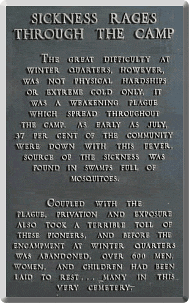

Deaths
One focus of the Winter Quarters Project is to collect information regarding the causes of death at Winter Quarters. This section of the website will, in the future, provide explanations of the various causes of death along with charts, graphs, comparisons with other early pioneer settlements (i.e. Nauvoo, Illinois) and more.
View Definitions of Causes of Death
View List of Pioneer Cemeteries in the Winter Quarters Area